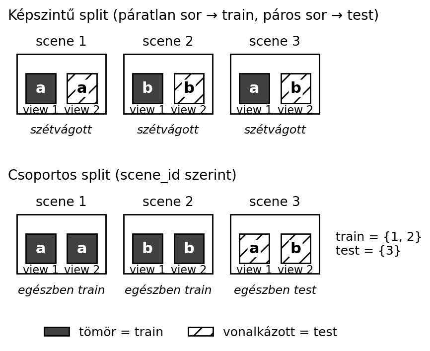

Az egység célja, hogy a programozói adatkezelést pontos megfigyelési egységgel, csoportos felosztással és ellenőrizhető szivárgásdefinícióval kapcsolja össze. Előismeretként csak az 1.2. Mitől egyetemi szintű egy modellezési állítás? állítástípusait és bizonyítékjegyzékét használjuk; haladó valószínűségszámításra nincs szükség.
Induló becslés. A függelék A. szakaszában leírt GlyphLab adatbázis 360 darab -es szürke képet tartalmaz, de ezek 180 jelenetből (scene) készültek, jelenetenként két zajos nézettel (view). Hány független megfigyelésünk van: 360 vagy 180? Ha valaki képszintű train/validation/test felosztást készít, pontosan milyen hibát követ el? Tippeljen, és a labor végén vesse össze a levezetett értékkel.
Megfigyelési egység (observation unit). Az az elemi rekord, amelyről a modell egy előrejelzést ad. A GlyphLabban ez egy kép, tehát a modell bemenete egy tenzor; a kezdőadatban , , float32, intenzitás. A hozzá tartozó cél , int64 osztályindex.
Scene és view. A scene az a rejtett, közös
képződmény, amelyből a képek keletkeznek: ugyanaz a geometriai
elrendezés, alakzatvastagság és pozíció. A view ennek egy
zajos, önálló képi megfigyelése. A metadata.csv minden
sorához scene_id és view_id tartozik; egy
scene mindkét view-ja ugyanabba a splitbe kerül.
Csoport (group). Egy megfigyeléscsoport azon rekordok halmaza, amelyek közös rejtett véletlen forrásból származnak. Formálisan legyen az rekord csoportazonosítója; a GlyphLabban . Az érvényes felosztás feltétele:
A kép a predikció és a képenkénti metrika megfigyelési egysége, míg a
scene_id a split és a csoportos bizonytalanságbecslés
egysége. A scene_id tehát a független mintavételi egység:
ha a tesztkészletből új jelenetekre akarunk következtetni, akkor a
felosztást jelenetekre, nem képekre kell elvégezni.
Train/validation/test. A train a paraméterek illesztésére, a validation a modell- és hiperparaméterválasztásra, a test a rögzített protokoll végén, egyszeri, független értékelésre szolgál. A GlyphLab split 120, 30, 30 független jelenetet, azaz 240, 60, 60 képet tartalmaz. A két view nem növeli a független jelenetek számát.
Transzformáció. Az a leképezés, amely a nyers
rekordból a modell bemenetét állítja elő:
.
Ha a transzformáció adaptív paramétereket tanul, például globális
standardizálást vagy PCA-alapú redukciót, akkor ezeket csak a train
felosztáson illesztjük; a teszt statisztikája nem szivároghat a trainbe.
A GlyphLab corrupted_test.npy állománya a rögzített split
után alkalmazott teszt-transzformáció: ugyanazokat a
jelenet–nézet párokat tartalmazza, ugyanabban a sorrendben, mint a
tiszta teszt, ezért a clean–corrupt összehasonlítás páros; így nem
befolyásolja a tanítást.
Adatszivárgás (data leakage). Két fő formája van. Az egyik a csoportszintű átszivárgás: ugyanazon scene képei különböző splitbe kerülnek, így a tesztben olyan rejtett jelenet szerepel, amelynek egy másik megfigyelését a train már látta. A másik a preprocessing-átszivárgás: a felosztás elvégzése előtt a teljes adaton számolunk statisztikát, alkalmazunk imputációt vagy választunk hiperparamétert. Mindkettő torzítja az általánosítási becslést.
A függetlenség formális valószínűségi definícióját az 5.1. Esemény, feltétel és véletlen változó egységben építjük fel; itt a diszkrét esetre szorítkozunk: és akkor független, ha minden értékre . A relatív gyakoriság ezt csak empirikusan becsli, ezért a lemmában eloszlásokkal számolunk. A feltételes függetlenséget csak a megadott szorzatszabály formájában használjuk: adott mellett . A következő lemmát saját, teljesen diszkrét generatív modellel bizonyítjuk.
Lemma (közös rejtett jelenetből származó nézetek függősége). Legyen rejtett jelenet, . Minden nézet egy zajos csatornán halad át: ha , a nézet értéket ad valószínűséggel és értéket valószínűséggel; ha , a szerepek felcserélődnek. A két csatorna zajai adott mellett függetlenek. Ekkor a két nézet és nem független.
Bizonyítás. Először a peremeloszlást számítjuk. Az feltételeit összegezve:
és ugyanígy . A szimmetria miatt ugyanez igaz -re.
Most az együttes eloszlást írjuk fel. Ha a két csatorna adott mellett független, akkor a helyes–helyes együttes valószínűség , a hibás–hibás . A két -érték együttesen:
Ha és függetlenek lennének, akkor a peremek szorzatának kellene teljesülnie:
Mivel , a két nézet nem független. ∎
A bizonyításban a feltételes függetlenség és a perem-összegzés szerepét érdemes külön látni: adott mellett a két zajdobás független, de a közös rejtett miatt a megfigyelések összekapcsolódnak. Ha a csatorna hibája lenne, az együttes tömeg volna, tehát maximális függést kapnánk. Ha a csatorna teljesen zajos lenne, vagyis a kimenet független lenne -től, akkor a nézetek is függetlenné válnának; a függés forrása tehát a közös jel.
Ugyanezt a generatív modellt egy háromjelenetes, kétnézetes miniatűr adatbázison szemléltetjük, hogy a csoportos split feltétele látható legyen.
| scene_id | view_id | megfigyelt nézetérték (a lemma csatornája) |
|---|---|---|
| 1 | 1 | a |
| 1 | 2 | a |
| 2 | 1 | b |
| 2 | 2 | b |
| 3 | 1 | a |
| 3 | 2 | b |
A táblázat a lemma bináris (/) csatornáját szemlélteti; a GlyphLab tényleges címkéje ezzel szemben jelenetszintű, egész értékű osztályindex , amelyet a két nézet közösen hordoz, nem nézetenként változó megfigyelés. A fenti táblában a scene 1 és 2 nézetei determinisztikusan azonosak, a scene 3 nézetei zajosak. Ha képszintű felosztást készítenénk, például a páratlan sorokat trainbe, a párosakat testbe tennénk, akkor a scene 1 és 2 egyik nézete a trainben, másik a testben lenne; a tesztben szereplő kép a trainből ismert jelenetet mutatná. A csoportos split ezzel szemben teljes scene-eket oszt be: az egyik lehetséges érvényes kimenet train = {scene 1, scene 2}, test = {scene 3}. Ekkor a teszt minden képe olyan jelenetből származik, amelyet a modell a trainben nem látott.

Előfeltétel. Python 3.12 és a cnn-labor
csomag (uv sync); a labor a szakasz kódját használja, a
szükséges csomagokat a laborcsomag rögzített környezete biztosítja.
Input és szerződés. A munkakönyvtár a
lab/; a bemenet data/metadata.csv, amelynek
oszlopai index, scene_id,
view_id, label, split,
xmin, ymin, xmax,
ymax. A scene_id szöveges azonosító
(G0-0000 alakú), a view_id, a
label és a dobozkoordináták int64, a
split string értékű (train, val,
test). A labor nem tölti be a képtensort, nem használ
GPU-t, és képi tenzorokon nem végez lebegőpontos műveletet; a
valószínűségszámítás egyetlen valós osztást használ, a dtype-egyezés
pedig a CSV-ből olvasott oszlopokon értendő.
Futtatási parancs. A lab/
könyvtárból:
python n003_split_check.pyKód.
# lab/n003_split_check.py
from __future__ import annotations
import math
import numpy as np
import pandas as pd
from pathlib import Path
DATA_DIR = Path("data")
meta = pd.read_csv(DATA_DIR / "metadata.csv")
# A metadata `index` oszlopa a képtömb sorindexe; a CSV fájlsorrend nem köt.
assert list(meta.columns) == ["index", "scene_id", "view_id", "label", "split",
"xmin", "ymin", "xmax", "ymax"], meta.columns
assert len(meta) == 360, len(meta)
assert meta["index"].tolist() == list(range(len(meta)))
def violating_scenes(df: pd.DataFrame, split_col: str) -> list[str]:
"""Azon scene_id-k, amelyek több különböző splitben szerepelnek."""
nunique = df.groupby("scene_id")[split_col].nunique()
return nunique[nunique > 1].index.tolist()
def scene_counts(df: pd.DataFrame, split_col: str) -> dict[str, int]:
return df.groupby(split_col)["scene_id"].nunique().to_dict()
# 1. Jó split ellenőrzése a gyártó szerint
bad_good = violating_scenes(meta, "split")
counts_good = scene_counts(meta, "split")
print("Jó split:")
print(" split-számláló scene-ekre:", counts_good)
print(" szabálytalan scene-ek száma:", len(bad_good))
assert bad_good == [], bad_good
assert counts_good == {"train": 120, "val": 30, "test": 30}, counts_good
# 2. Szándékosan hibás, képszintű split
rng = np.random.default_rng(12345) # a hibás split seedje
idx = rng.permutation(len(meta))
n_train, n_val = 240, 60
bad_split = np.full(len(meta), "unused", dtype="<U6")
bad_split[idx[:n_train]] = "train"
bad_split[idx[n_train:n_train + n_val]] = "val"
bad_split[idx[n_train + n_val:]] = "test"
meta_bad = meta.copy()
meta_bad["split_bad"] = bad_split
bad_bad = violating_scenes(meta_bad, "split_bad")
counts_bad = scene_counts(meta_bad, "split_bad")
print("Hibás split:")
print(" split-számláló scene-ekre:", counts_bad)
print(" szabálytalan scene-ek száma:", len(bad_bad))
assert len(bad_bad) > 0, "a képszintű splitnek szabálytalan scene-t kell adnia"
# 3. Várható szabálytalan scene-szám a hibás splithez
C = math.comb # Python 3.8+: pontos egész binomiális együttható
p_same = (C(240, 2) + C(60, 2) + C(60, 2)) / C(360, 2)
print(f"Egy scene együtt maradásának valószínűsége: {p_same:.4f}")
print(f"Várható szabálytalan scene-szám: {180 * (1 - p_same):.2f}")
assert f"{180 * (1 - p_same):.2f}" == "90.25"A fenti kód tényleges kimenete (Python 3.12.3, NumPy 2.5.4, pandas
3.1.0, egy szál; a laborcsomag lockolt profilja NumPy 2.3.5-öt és pandas
2.3.3-at rögzít; a hallgató a saját futásának kimenetét naplózza; a
data/metadata.csv SHA-256 lenyomata
5acc5c5d4c6e1866b30519c84c35c895b60b499feff12c680bfbaf02fb5c1b9b):
Jó split:
split-számláló scene-ekre: {'test': 30, 'train': 120, 'val': 30}
szabálytalan scene-ek száma: 0
Hibás split:
split-számláló scene-ekre: {'test': 53, 'train': 160, 'val': 55}
szabálytalan scene-ek száma: 88
Egy scene együtt maradásának valószínűsége: 0.4986
Várható szabálytalan scene-szám: 90.25Mért eredmény és értelmezés. A jó splitre a
violating_scenes üres lista, és a scene-számláló mindhárom
kulcsra az előírt értéket adja (train: 120,
val: 30, test: 30), ahogyan a GlyphLab
szerződése rögzíti; a fenti kimenetben a pandas a szótárat kulcs szerint
rendezve írja ki (test, train,
val sorrendben), ami nem változtat a számok jelentésén. A
szándékosan hibás felosztásban ezzel szemben a képeket a
scene_id figyelmen kívül hagyásával permutáltuk, ezért sok
scene két view-ja különböző splitbe kerül.
A hibás splithez tartozó várható szabálytalan scene-szám levezethető elemi kombinatorikával. Egy rögzített scene két view-ja akkor marad együtt, ha mindkettő ugyanabba a szegmensbe esik:
Ezért a várhatóan szabálytalan scene-ek száma
A mért futásban a 12345 seeddel a szabálytalan scene-ek
száma 88, a levezetett várható érték 90,25; a szabálytalan scene-ek
száma közelítőleg binomiális eloszlású, szórása
,
ezért a seedtől függő eltérés néhány egységnyi. Az ellenőrzés kritériuma
az, hogy a hibás splitre pozitív, a jóra nulla legyen, amit a kód
assert-jei rögzítenek. Ez a labor éppen a csoportos split
feltételét teszteli: a jó felosztásban soha nem lép át scene, a hibásban
a mért futásban 180-ból 88 jelenet igen.
F1 fogalmi (1-es nehézség). Határozza meg a
scene és a view különbségét, és indokolja
három mondatban, miért nem helyettesítheti a 360 képet 360 független
jelenetnek. Elvárt eredmény: pontos fogalmi megkülönböztetés és a közös
rejtett okra hivatkozó indoklás.
F2 levezetési (2-es nehézség). Tekintse az egyenletes eloszlású rejtett jelenetet. Az egyes nézetek az értékét valószínűséggel helyesen adják, a másik két értékre egyenként – valószínűséggel tévednek; a két nézet adott mellett független. Számítsa ki értékét, és mutassa meg, miért nem független a két nézet. Elvárt eredmény: levezetett és a függetlenségi összehasonlítás -dal.
F3 implementációs (2-es nehézség). Írjon
split_integrity(df, split_col) függvényt, amely visszaadja
azon scene_id-k listáját, amelyek több különböző splitben
szerepelnek. Tesztelje a data/metadata.csv-n a
split oszlopra, majd egy mesterségesen megcserélt
split_bad oszlopra. Elvárt eredmény: futtatható kód, üres
lista a jó, nem üres a rossz oszlopra.
F4 hibakeresési (2-es nehézség). Az alábbi kód képszintű splitet készít. Azonosítsa a hibát, írja le a teszt-accuracyra gyakorolt következményét, és adja meg a scene-szintű javítást, valamint annak ellenőrzését.
import numpy as np
def split_by_view(meta, rng):
meta = meta.copy()
idx = rng.permutation(len(meta))
split = np.full(len(meta), "train", dtype="<U5")
split[idx[240:300]] = "val"
split[idx[300:]] = "test"
meta["split"] = split
return metaElvárt eredmény: a hiba lokalizálása, a torzítás irányának indoklása,
valamint a javított függvény és a violating_scenes
ellenőrzés futási kritériuma.
F5 kísérlettervezési/transzfer (3-as nehézség). A GlyphLab bővített változatában jelenetenként 10 time-lapse nézetet készítünk, és a felhasználási cél ismeretlen jelenetek osztályozása. Tervezzen protokollt: mi a megfigyelési egység, hogyan választja szét a train/validation/test készleteket, mi legyen a baseline, és milyen metrikával, illetve ellenőrzéssel mutatná ki az esetleges szivárgást? Elvárt eredmény: egy lehetséges terv, annak korlátjaival; alternatív terv megadása esetén az eltérő döntés indoklása.
F1 megoldás. A scene a közös rejtett geometriai elrendezés, a view ennek egy zajos képi vetülete. Két view ugyanarról a scene-ről nem cserélhető fel két független jelenettel, mert az egyik nézet alapján a másikra jobb előrejelzés adható, mint a peremeloszlásból. Ezért a független mintavételi egység a scene; a képek száma csak a modellbemenetek számát adja, nem a statisztikai bizonyíték erejét.
F2 megoldás. Adott mellett a két csatorna azonos válaszának valószínűsége az esélyek négyzetösszege:
Mivel nem függ -től,
A peremeloszlás egyenletes marad: tetszőleges -re
Ha a két nézet független lenne, akkor volna. Mivel , a nézetek nem függetlenek; a közös rejtett az együttes eloszlást a peremek szorzatától eltéríti.
F3 megoldás. A feladat split_integrity
függvénye ugyanazt a csoportosítást végzi, mint a laborbeli
violating_scenes; a megoldásban önállóan definiáljuk, majd
a labor adatán teszteljük. Nem elég teljes jelenetek splitjét
megváltoztatni: az nem sérti a csoportszintű feltételt. A teszthez két
kiválasztott jelenetnek csak egy-egy nézetét kell az
eredetitől eltérő splitbe tenni:
def split_integrity(df, split_col):
"""Azon scene_id-k, amelyek több különböző splitben szerepelnek."""
grouped = df.groupby("scene_id")[split_col].nunique()
return grouped[grouped > 1].index.tolist()
meta_test = meta.copy()
meta_test["split_bad"] = meta_test["split"]
selected = meta_test["scene_id"].unique()[:2]
for sid in selected:
row_id = meta_test.index[meta_test["scene_id"] == sid][0]
old_split = meta_test.loc[row_id, "split_bad"]
meta_test.loc[row_id, "split_bad"] = (
"test" if old_split != "test" else "train"
)
assert split_integrity(meta, "split") == []
bad = split_integrity(meta_test, "split_bad")
assert set(bad) == set(selected) and len(bad) == 2Az ellenőrzés típusa halmaz-egyezés, nem lebegőpontos tolerancia: a
jó oszlopra a lista üres, a hibásra pontosan a két módosított
scene_id jelenik meg.
F4 megoldás. A hiba az, hogy a
np.random.permutation a 360 képet függetlenül sorsolja,
ezért a scene_id-t nem veszi figyelembe: ugyanazon scene
két view-ja különböző splitbe kerülhet. Következmény: a testben olyan
jelenetek jelennek meg, amelyek egy másik nézete a trainben szerepel; a
teszt-accuracy felfelé torzul, mert a modell ismert geometriákra
válaszol, nem új jelenetekre.
Javítás: először a scene-ekből kell permutációt készíteni, majd a scene-hez tartozó összes view-t együtt kell beosztani. Egy lehetséges vázlat:
def split_by_scene(meta, rng):
meta = meta.copy()
scenes = meta["scene_id"].unique()
perm = rng.permutation(len(scenes))
split_map = {}
for s in scenes[perm[:120]]:
split_map[s] = "train"
for s in scenes[perm[120:150]]:
split_map[s] = "val"
for s in scenes[perm[150:]]:
split_map[s] = "test"
meta["split_fixed"] = meta["scene_id"].map(split_map)
return metaEllenőrzés: a violating_scenes(meta, "split_fixed")
eredményének üresnek, a scene-számlálónak pedig
train: 120, val: 30, test: 30 értékűnek kell lennie.
F5 megoldásminta. A megfigyelési egység továbbra is a scene, mert a time-lapse sorozat tagjai közös jelenetből erednek. A felosztást scene-szintű osztály-rétegzett permutációval végeznénk, például 120/30/30 jelenettel; egy scene összes nézete egy splitbe kerülne. A rétegzés osztályonként 40 train, 10 validation és 10 test jelenetet ad (három osztályra ); a jelenetenkénti nézetszám a splitet nem befolyásolja:
def stratified_scene_split(meta, rng):
meta = meta.copy()
scenes = meta.groupby("scene_id")["label"].first()
split_map = {}
for _, group in scenes.groupby(scenes):
ids = group.index.to_numpy()[rng.permutation(len(group))]
split_map.update({sid: "train" for sid in ids[:40]})
split_map.update({sid: "val" for sid in ids[40:50]})
split_map.update({sid: "test" for sid in ids[50:]})
meta["split"] = meta["scene_id"].map(split_map)
return metaA violating_scenes ellenőrzés itt is üres listát ad, a
scene-számláló pedig train: 120, val: 30, test: 30;
emellett az osztályonkénti scene-szám a split mindhárom részében
40/10/10. Baseline-ként egy olyan modellt választanánk, amely a
train-osztályok relatív gyakoriságát jósolja, vagy egy korábbi kis
CNN-t, mert a kérdés az, hogy a jeleneten belüli plusz nézetek
javítják-e az új jelenetekre való általánosítást.
Metrika: scene-szintű átlagos accuracy és per-kép accuracy, valamint
páros ellenőrzés, hogy a testben nem szerepel olyan scene, amelynek
bármely view-ja a trainben vagy a valben van. A szivárgás detektálására
a split_integrity függvényt futtatnánk a végső
metadata.csv-n. Fontos korlát: jelenetenként pontosan 10
érvényes nézet mellett a per-kép accuracy számtanilag egyenlő a
scene-szintű átlaggal, mert minden jelenet 10 képpel szerepel; a nézetek
azonban nem függetlenek, ezért a per-kép accuracy körüli
bizonytalanságot nem a képszám (1800), hanem az effektív mintanagyság, a
180 jelenet alapján kell becsülni. Ezért a fő metrika a scene-szintű
átlag, a bizonytalanságot pedig jelenetszintű bootstrap adja; ha egyes
jeleneteknél hiányzik néhány nézet, a per-kép átlag már nem egyezik a
scene-szintűvel.
A leggyakoribb tévedés: a több kép több független megfigyelést jelent. A GlyphLab ellenpéldája: a 360 kép 180 jelenetből áll; ha képszintű splitet készítünk, várhatóan körülbelül 90 jelenetnek az egyik nézete a trainbe, a másik a testbe kerül. A teszt-accuracy ekkor olyan jeleneteken is mér, amelyeket a modell a trainből részben ismer; a magas érték nem tekinthető az ismeretlen jelenetre való általánosítás bizonyítékának, szivárgásra utalhat. A képek darabszáma tehát a számítási költséget és a modellbemenetek számát jellemzi, nem a független bizonyítékok számát.
view_id-t használná?violating_scenes függvény
visszatérési listája?Az 1.2. Mitől egyetemi szintű egy modellezési
állítás? áttekintése: az empirikus állítás típusa megköveteli az
adatot, a splitet és a számítási protokollt. A most bevezetett
scene_id azt a hiányzó protokoll-összetevőt adja meg, amely
nélkül a pontossági számítás nem minősülhet megalapozott empirikus
állításnak.
A megfigyelési egység nem mindig azonos a modell bemenetével: a
GlyphLabban a bemenet a kép, de a független egység a
scene_id. A GlyphLabban ezért 180 független megfigyelési
egység van, nem 360; a 360 kép két-két nézete ugyanahhoz a jelenethez
tartozik. A train/validation/test felosztás érvényességi feltétele, hogy
egy csoport minden rekordja ugyanabba a splitbe kerüljön; ennek
megsértése csoportszintű adatszivárgást okoz. A zajos nézetek függőségét
diszkrét generatív modellel bizonyítottuk: a közös rejtett jelenet miatt
az együttes eloszlás nem a peremek szorzata. A labor a jó splitre nulla,
a képszintű hibás splitre a mért futásban 88 szabálytalan jelenetet
mutat. A feladatok a fogalmi megkülönböztetést, a levezetést, az
ellenőrző kódot, a hibás felosztás javítását és egy time-lapse
transzferprotokollt fedik le.
Továbblépés. Az 1.4. Tanulási diagnózis és kísérleti napló egységben a tanulási diagnózist és a kísérleti naplót építjük fel; a mostani split-ellenőrzés lesz a napló első kötelező rovata.
Források